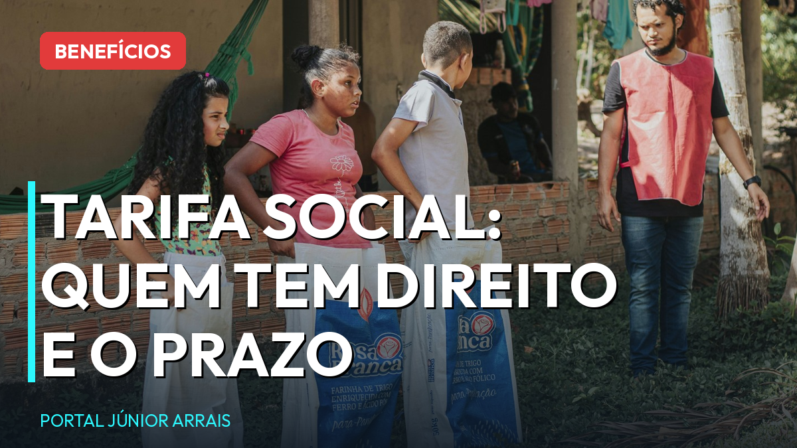
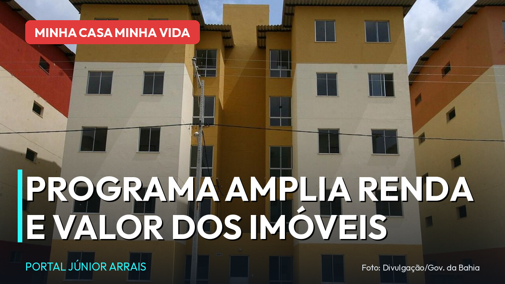

Todas as notícias

Bolsa Família de agosto: calendário completo por final do NIS, de 18 a 31
Pagamentos vão de 18 a 31 de agosto, escalonados pelo final do NIS; veja a sua data e os valores.

INSS: calendário de agosto começa dia 25; veja a sua data pelo final do benefício
Quem ganha até um salário mínimo recebe a partir de 25 de agosto; quem ganha acima, a partir de 1º de setembro.

Conta de luz grátis pela Tarifa Social: quem tem direito e o prazo até dezembro
Desconto de 100% até 80 kWh vale para quem está no CadÚnico; 3,5 milhões precisam atualizar dados.
Pé-de-Meia: quase 1 milhão de contas estão paradas; veja como liberar a sua
São 991 mil contas sem movimentação; menor de 18 anos depende da autorização do responsável.

Pé-de-Meia: família tem até 7 de agosto para estar no CadÚnico e garantir o benefício
Quem não estiver com o cadastro ativo até a data-base só entra no programa no ano que vem.

Governo libera R$ 547 milhões para devolver descontos indevidos do INSS
Medida provisória abre crédito extraordinário para o ressarcimento de aposentados e pensionistas.

INSS começa a pagar julho nesta segunda (27); veja o calendário completo até 7 de agosto
Quem ganha um salário mínimo recebe primeiro, pelo final do cartão do benefício.

Minha Casa Minha Vida amplia limite de renda para R$ 3.200 na faixa 1
Teto do imóvel também subiu, para R$ 600 mil. Veja as novas faixas.

BPC de R$ 1.621 começa a ser pago segunda (27); veja quem tem direito
Calendário, regra de renda por pessoa e o alerta do CadÚnico.

Gás do Povo: vale de julho pode ser trocado até 9 de agosto
Quem recebe neste mês, quantas recargas por ano e como usar.
FGTS: nascidos em julho já podem sacar; prazo até 30 de setembro
Como funciona o saque-aniversário e o cuidado antes de aderir.

Flávio Bolsonaro promete internet e até celular de graça para mulheres
Plano "Brasil por Elas" é promessa de campanha — cuidado com golpes.

Pé-de-Meia volta a pagar de 24 a 31 de agosto; veja o calendário
5ª parcela sai para quem teve 80% de presença em maio e junho.

Gás do Povo: botijões da China já são 1 em cada 4 vendidos no Brasil
Importação disparou com o programa; entenda a disputa na indústria.

Bolsa Família: veja o calendário completo de julho e os valores
Pagamentos escalonados pelo final do NIS, com as regras para receber.

Governo adia para julho de 2027 novas regras do CadÚnico
Entrevista domiciliar obrigatória foi adiada; veja o que continua valendo.